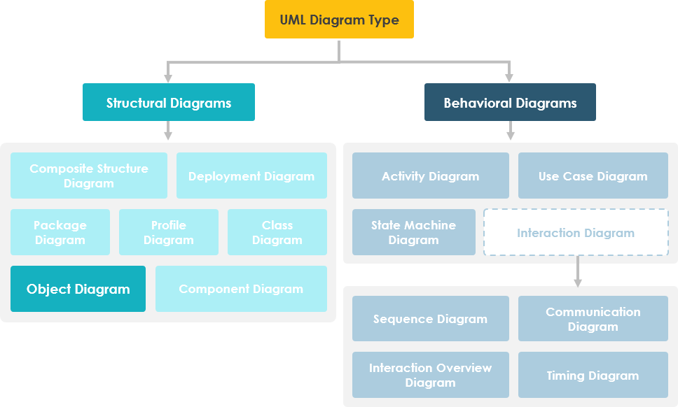
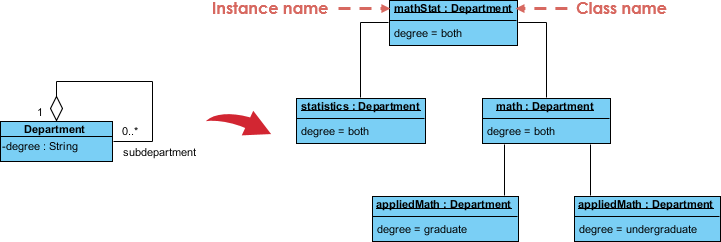
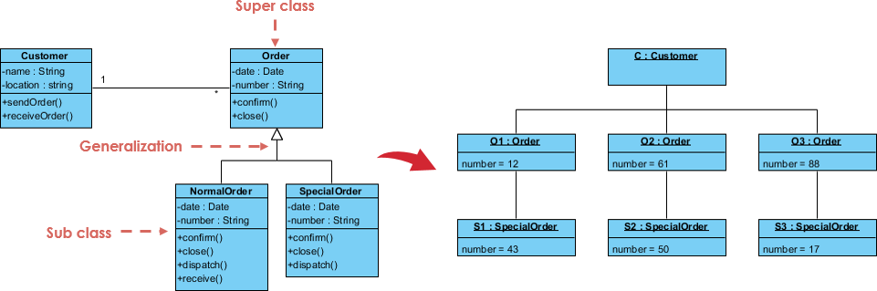
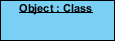
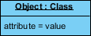
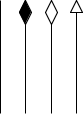

Objekt on klassi eksemplar kindlal ajahetkel käituse ajal ning tal võivad olla oma olek ja andmeväärtused.
Samamoodi on staatiline UML objektidiagramm klassidiagrammi eksemplar;
see näitab süsteemi detailset olekut ühel kindlal ajahetkel.
Seega hõlmab objektidiagramm objekte ja nendevahelisi seoseid,
mida võib pidada klassidiagrammi või suhtlusdiagrammi erijuhuks.

Objektdiagrammi eesmärk
Objektdiagrammide kasutusala on üsna piiratud, peamiselt
andmestruktuuride näidete näitamiseks.
- Projekti analüüsifaasis võid luua klassidiagrammi süsteemi struktuuri
kirjeldamiseks ja seejärel luua objektdiagrammide komplekti
testjuhtumiteks, et kontrollida klassidiagrammi täpsust ja
täielikkust.
- Enne klassidiagrammi loomist võid luua objektdiagrammi, et avastada
fakte konkreetsete mudelielementide ja nende seoste kohta või
illustreerida konkreetseid näiteid nõutavatest klassifikaatoritest.
Objektdiagrammi ülevaade
Objektdiagramm näitab seost instantsitud klasside ja määratletud
klassi vahel ning nende objektide vahel süsteemis.
Need on kasulikud süsteemi väiksemate osade selgitamiseks, kui
süsteemi klassidiagramm on väga keeruline, ning mõnikord ka
rekursiivsete suhete modelleerimiseks diagrammil.
Parim viis illustreerida, milline objektdiagramm välja näeb, on
näidata objektdiagrammi, mis on tuletatud vastavast klassidiagrammist.
Järgmine Tellimuste Halduse Süsteem näitab nende suhteid. See väike
klassidiagramm näitab, et ülikooli osakond võib sisaldada palju teisi
osakondi ning allolev objektdiagramm instantsib klassidiagrammi,
asendades selle konkreetse näitega.

Klassist objektdiagrammiks näide - Tellimuste süsteem

| Objekti nimed: Iga objekti kujutatakse ristkülikuna, mille sees on objekti nimi ja klass allajoonitult ning eraldatud kooloniga. |
 |
| Objekti atribuudid: Nagu klasside puhul, saab ka objekti atribuudid loetleda eraldi lahtris. Kuid erinevalt klassidest peavad objekti atribuutidel olema väärtused määratud. |
 |
| Lingid: Lingid on seoste eksemplarid. Lingid joonistatakse samade joontega nagu klassidiagrammides. |
 |